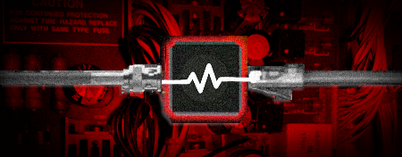

|  |
| Last Update: February 6, 2025 - 10:35 PM MST |
|
Quarrybank Media Production is a technical electronics and creative services company that specializes in repairing reel-to-reel tape recorders, assisting recording artists and production of reproducer calibration tapes. We are located in Fort Collins, Colorado.
Our products enable optimal performance across vintage audio equipment, and enable artists and audiophiles to achieve great sonic ability when recording or playing back music. Using our specialized techniques and equipment, we design, develop, and produce high-performance audio solutions, including calibration tapes for reel-to-reel tape recorders, artist recording services, and expert repairs for both vintage and modern stereo equipment. Our work includes op-amp replacements and component adjustments, using high-quality electrical components sourced from trusted manufacturers like Nichicon and Vishay Intertechnology. We take pride in our customer service and can assist in most requests relating to vintage audio equipment. Have something you want worked on? Send us a message! Quarrybank and the wave logo are NOT registered trademarks of Quarrybank Media Production and/or its subsidiaries at this time. Questions? Comments? Send us e-mail here. |